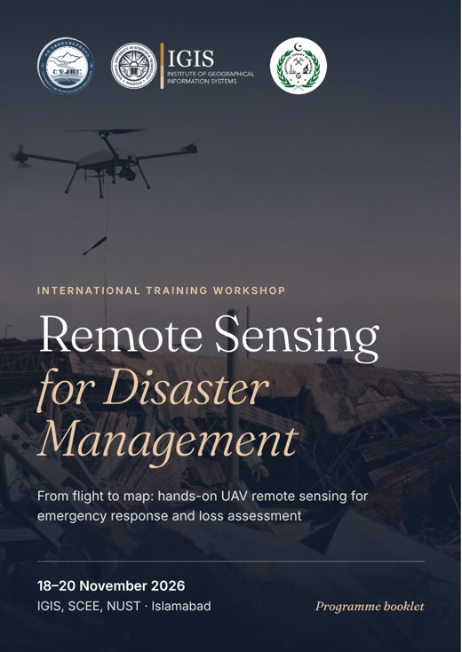
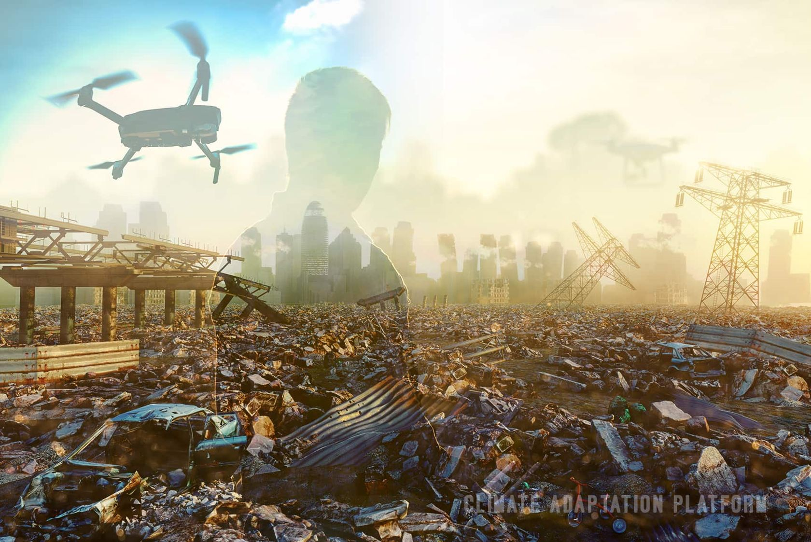
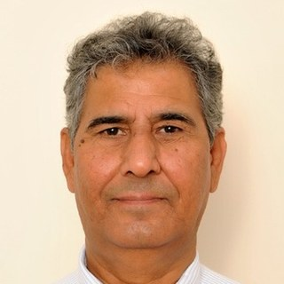

Programme booklet
The full programme.
Turn the pages of the 12-page workshop booklet: the timetable for all three days, learning outcomes, lecturers, preparation checklist and venue. Download it as an A5 PDF to print or keep on your phone.
01 · About the workshop
The close-up view responders need.
When a monsoon flood moves through the Indus basin, responders need answers fast: which embankments breached, which bridges failed, how many homes are lost?
Drones can reach a disaster site within hours and record it in centimetre detail, giving responders a close-up view that wide-area imagery cannot.
This workshop takes participants from the basics of UAVs and remote sensing to planning a survey, flying it and turning the images into maps and 3D models, using standard commercial UAVs and established processing software. Everything demonstrated can be reproduced with equipment ordinarily available to a Pakistani institution.

By the close of Day 3, every participant will have produced:
- Flight planfor a real survey mission
- Drone imageryorthophoto, oblique and thermal
- Orthophoto mapfrom a survey they helped fly
- 3D modelfrom oblique photography
- Response planfrom the capstone exercise
02 · Who should attend
For anyone whose mandate is shaped by natural hazards.
Faculty, researchers and staff working in disaster monitoring and early warning, emergency rescue, damage and loss estimation, relief and compensation, and post-disaster reconstruction, as well as students in GIS, remote sensing, environmental and civil engineering, and related fields.
- Disaster management authorities
- Agriculture & irrigation
- Revenue & land records
- Water & power
- Forestry & environment
- Health
- Food security
- Urban planning & development
- Communications & works
- Local government
- Universities & research institutes
- Students
- About 30 seats. Open to professionals, researchers and students, who can all register directly. Organizations may also nominate up to four participants each.
- Full attendance required. The Day 2 field session and Day 3 capstone build directly on earlier work.
- No coding or flying experience needed. Basic familiarity with maps, coordinates and GIS is enough.
03 · Programme
From the wide view to the close-up.
Doors open at 9:00 AM and sessions start at 9:15 AM each day. Days 1 and 2 end at 4:00 PM; on Day 3 sessions end at 12:15 PM and the closing ceremony follows Friday prayers at 2:30 PM. Pick a day, then open any session for its content.
-
01 Wed · 18 Nov
UAV and remote sensing basics
- Registration · badge collection and laptop check
Opening ceremony
Welcome address and inauguration of the workshop.
Module 1 · Introduction to UAVs
Definition, development and characteristics of UAVs; composition and basic principles of UAV systems; related industries, norms and regulations; administrative departments and general operating procedures in Pakistan; requirements for remote sensing platforms and how to choose one by model, flight time, altitude, speed, payload capacity and integration.
- Tea break
Module 2 · Remote sensing basics
Remote sensing types, definitions and scope; fundamentals of photogrammetry; remote sensing applications; software demonstration and practical operation.
Module 3 · UAV remote sensing in disaster management
Disaster risk assessment, monitoring and early warning, emergency response, and loss assessment and recovery monitoring, through practical cases. How UAV remote sensing compares with traditional methods in response speed, resolution, flexibility and cost.
- Lunch and prayers
Module 4 · Sensors and data acquisition
Basic principles of UAV data acquisition; working principles and data characteristics of optical, multispectral, thermal and LiDAR sensors; geometric correction and radiometric calibration; how to obtain high-quality, usable data.
- Tea break
Flight planning exercise
Principles and methods of UAV flight planning: delineating the flight area and avoiding prohibited and restricted zones; setting altitude, speed and image overlap for the sensor and terrain; automatic route generation and manual adjustment. Groups plan the mission they will fly on Day 2.
Wrap-up and Q&A
Recap of the day and a preview of Day 2.
-
02 Thu · 19 Nov
UAV data processing and practice
- Arrival and tea
Module 5 · UAV data processing
Data products and the principles and basic workflow of UAV data processing; position and attitude (POS) data organization; image preprocessing, quick stitching, registration and correction; output of results; oblique photography, its equipment and applications; mainstream 3D processing software and the oblique workflow from checking and import to adjustment, modelling and output.
- Transfer to the NUST field site · near the Saddle Club
Practical 1 · Mission flights
Basic flight operations; emergency take-off and landing, including on uneven ground; one-click return-to-home settings; flying the planned mission route; multi-source data collection: orthophoto, oblique photography and thermal infrared images.
- Return to IGIS, lunch and prayers
Practical 2 · Processing software
Hands-on with UAV processing software on IGIS workstations: data preprocessing, orthophoto generation and oblique photography 3D modelling.
- Tea break
Wrap-up and Q&A
Recap of the day and a preview of Day 3.
The processing practical uses a prepared dataset so it fits the time; the same dataset is the backup if weather or airspace prevents flying.
-
03 Fri · 20 Nov
Integration, case studies & rapid response
- Arrival and tea
Module 6 · Remote sensing in disaster response
How remote sensing supports a real emergency response: deciding where to look and where to fly, getting permissions quickly, turning imagery into products responders can use, and who does what, and how quickly.
Applied case studies
Three Pakistani studies:
- Flood risk assessment of Attabad Lake using a scenario-based approach.
- Shisper Lake glacial lake outburst flood scenarios with HEC-RAS 2D.
- Riverine flooding in Jhang district and the summer monsoon over the Upper Indus Basin.
- Short break · scenario packs handed out
Capstone · Rapid-response simulation
Groups take a disaster scenario and prepare a short remote sensing response plan: what to survey and why, which data and sensors to use, how to collect them, and the products they would deliver to responders. Scenarios include monsoon flooding in Dera Ghazi Khan, a glacial lake outburst in Hunza, urban flooding in Karachi and post-flood recovery in Sindh.
Group presentations
Each group presents its brief, with feedback from the instructors.
- Friday prayers and lunch
Closing ceremony
Course summary, remarks by dignitaries, award of certificates and group photograph.
04 · Learning outcomes
What you’ll be able to do.
- Explain the composition, principles and types of UAV systems, and choose a platform for a remote sensing task.
- State Pakistan’s UAV regulations and operating procedures, and follow correct practice for permission and flight safety.
- Describe remote sensing types and the fundamentals of photogrammetry.
- Explain how UAV remote sensing supports each stage of disaster management, and its advantages over traditional methods.
- Describe how optical, multispectral, thermal and LiDAR sensors work and how to obtain high-quality data.
- Plan a UAV survey: flight area, altitude, speed, overlap and route.
- Take part in a supervised mission flight and collect orthophoto, oblique and thermal imagery.
- Process UAV imagery into an orthophoto and an oblique 3D model.
- Prepare a remote sensing response plan for a disaster scenario.
05 · Expert Lecturers
International and national expertise in remote sensing and disaster risk.
Delivered jointly by two experts nominated by CPJRC from the Institute of Mountain Hazards and Environment, Chinese Academy of Sciences, and two faculty members of SCEE – IGIS, NUST.
-
Dr. NIE Yong
Professor · Institute of Mountain Hazards and Environment (IMHE), CAS
Director of the Mountain Science Data Center at IMHE and recipient of the CAS Regional Development Young Scholar Award. Works on glacier and glacial lake hazards and new remote sensing methods; led the Glacier and Glacial Lake Monitoring Network and contributed to disaster risk assessment for the China–Pakistan Economic Corridor. More than 50 papers, including ESI highly cited work; review expert for NSFC, MOST, ERC and NERC.
-
Engr. WANG Wen
Assistant Engineer · Mountain Science Data Center, IMHE, CAS
Specializes in multi-source remote sensing for mountain hazards and the cryosphere, including glacial lake inventories and freeze–thaw disaster monitoring. Extensive UAV field experience, from flight planning and image quality control to orthomosaics, DEMs, point clouds and 3D models. Has contributed to national and provincial projects, papers and patents on glacial lake extraction, and teaches with case studies from High Asia.
-

Dr. Javed Iqbal
Professor · SCEE – IGIS, NUST
Over three decades of teaching, research and leadership; PhD from Mississippi State University and MS from the University of Arkansas. Works on soil science, GIS and remote sensing, and hazard mapping of landslides, glacier avalanches and flash floods. More than 200 scholarly contributions (h-index 29); supervised over 100 MS and 4 PhD students; funding from DAAD, NSF and Erasmus.
-
Dr. Shahid Nawaz Khan
Assistant Professor · SCEE – IGIS, NUST
PhD in Remote Sensing (University of Alabama) and MS in GIScience (South Dakota State University); President’s and Rector’s Gold Medals at NUST. Researches explainable, spatially explicit machine learning for Earth observation, SAR–optical fusion, large-scale Earth Engine workflows and UAV remote sensing. FAA Part 107-certified remote pilot with 200+ flight hours.
06 · Before you arrive
Come ready to work.
The schedule is compressed, so please have these ready before Day 1.
Any ordinary laptop is enough. Day 2 processing runs on IGIS workstations, and you take home a sample dataset to repeat the workflow later.
- A laptop for the software demonstrations and exercises.
- QGIS 3.34 LTR installed, with at least 5 GB of free disk space.
- A UAV ground-station app on your phone or tablet for mission planning, charged, with a cable.
- Field clothing for Day 2 morning: closed-toe shoes, sun protection and a hat. The site is open ground with little shade.
- The pre-reading pack, circulated in advance: sensor terminology, correction concepts and the disaster management cycle.
- Signed field-safety acknowledgement, handed in at registration.
07 · Registration
Reserve your seat.
PKR 10,000registration fee per participant
- Fill in the form. Submit the online registration form with your details and affiliation.
- Pay the fee. Transfer PKR 10,000 to the account shown here, with
Remote Sensing Workshop 2026
and your name in the remarks. - Get confirmation. We confirm your seat by email once payment is verified.
Bank details for the registration fee
- Account title
- IGIS Non-Development Fund Account
- Bank / branch
- HBL, H-12 NUST Branch, Islamabad
- Branch code
- 2292
- Account number
- 22927000142903
- IBAN
- PK85HABB0022927000142903
08 · Venue & contact
See you at NUST.
Lectures & labs · all three days
Institute of Geographical Information Systems
School of Civil and Environmental EngineeringNUST Sector H-12, Islamabad 44000 Get directions
UAV flight operations · Day 2 morning
NUST Field Site
Near the Saddle Club, NUST H-12 campusTransfer from IGIS at 10:30 AM